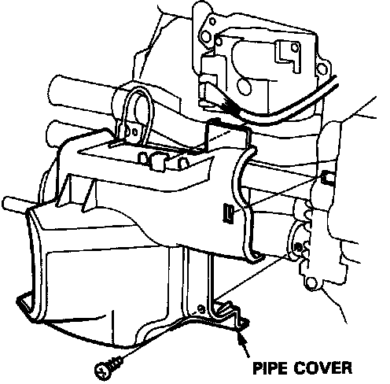
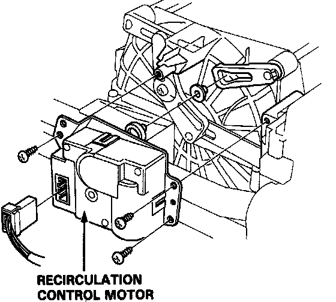

Recirculation Control Motor
Recirculation Control Motor Removal
1. Remove the mounting scew, then remove the pipe cover.
2. Disconnect the recirculation control motor connector.

3. Remove its mounting screws and the recirculation control motor.